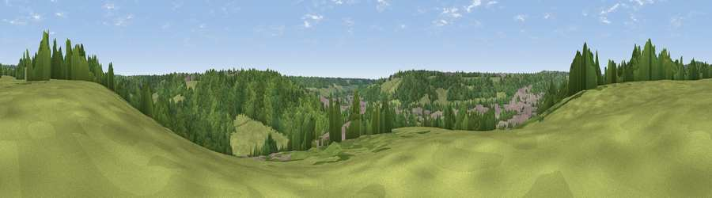

Viewpoint near Loudwater
#45804 in England · top 92% of its area beats it · near Loudwater · path 140 mWhere it is
The exact computed spot (SU 91275 90425). Click the marker for map links.
Public access: the nearest public right of way is about 140 m away — the final stretch may cross private land. Computed from Natural England's CRoW access layer and OpenStreetMap rights of way — not the legal definitive map. Always verify locally.
The view, rendered

A 360° render of this exact spot computed from the terrain model, tree cover and land cover — summer colours, afternoon light, calibrated against photographs of famous viewpoints. Real trees, hedges and buildings will differ in detail.
The panorama
Grey silhouette: terrain skyline in each direction (720 bearings, Earth curvature and refraction included). Dashed green: skyline with trees (+15 m) and buildings (+8 m) as obstacles. Blue strip: how far the ground is visible on each bearing.
Where the view opens
Wedge length = distance to the farthest visible ground on that bearing (vegetation-aware). Rings at 10, 25 and 50 km.
What fills the view
56% woodland · 32% grassland · 11% built-up · 1% cropland
Angular shares of the visible panorama (visual magnitude), not map area. Landscape diversity 0.43 (0–1 Shannon).
Key numbers
More beautiful places nearby
The staircase of upgrades: each row has a higher view potential than everything closer. Driving times are estimates from straight-line distance, calibrated against real road routing — check an actual route before setting out.
| Place | Direction | Drive | Score |
|---|---|---|---|
| Viewpoint near Loudwater | NW · 1 km | ~3 min | 21.3 |
| Viewpoint near Loudwater | NNW · 2 km | ~4 min | 33.8 |
| Viewpoint near Marlow Bottom | WSW · 8 km | ~16 min | 34.2 |
| Fultness Wood Hill | SW · 8 km | ~16 min | 39.0 |
| Windsor Castle | SSE · 15 km | ~26 min | 39.8 |
| Viewpoint near Whiteleaf | NW · 16 km | ~28 min | 58.2 |
| Brush Hill | NW · 16 km | ~28 min | 67.9 |
| Viewpoint near Whiteleaf | NNW · 16 km | ~29 min | 70.1 |
51.60527, -0.68341 · source: screening · position refined by local search. Computed location — check access rights before visiting.